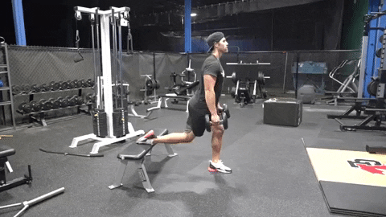
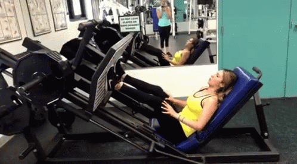

Why Workout Legs
Developing strength and power are just a few of the many benefits of a leg workout. Training these large muscles also improves athletic performance, making it easier to jump, run, kick, pivot, balance, accelerate, decelerate and turn. Plus, a strong lower body helps prevent injuries. And according to the American Council on Exercise, exercise may also help boost testosterone levels, especially in men over the age of 35.

Leg Workout for Beginners
Deadlift

4 sets of 5 reps
Squat down and grasp a barbell with your hands roughly shoulder-width apart. Keep your chest up, pull your shoulders back and look straight ahead as you lift the bar. Focus on taking the weight back onto your heels and keep the bar as close as possible to your body at all times. Lift to thigh level, pause, then return under control to the start position.
Bulgarian Split Squat

4 sets of 10 reps
Find yourself a step, bench or any other contraption that you can rest a foot on, it needs to be about knee height. Get into a forward lunge position with torso upright, core braced and hips square to your body, with your back foot elevated on the bench. Your leading leg should be half a metre or so in front of bench. Lower until your front thigh is almost horizontal, keeping your knee in line with your foot. Don't let your front knee travel beyond your toes. Drive up through your front heel back to the starting position, again keeping your movements measured.
Leg Presses

4 sets of 12 reps
Brace your abdominal muscles and push the platform away with your heels and forefoot. Your heels should remain flat on the footplate. The front of your foot or toes should never be used exclusively to move the pad forward. While exhaling, extend your legs and keep your head and back flat against the seat pad. Extend with slow control rather than with an explosive movement. Pause at the top of the movement. Do not lock out your knees and ensure that they are not bowing out or in. While inhaling, return the footplate to the starting position by gradually bending the knees. Keep the feet and back flat throughout. If you have never done leg presses before, start modestly with three sets of 10 leg presses. You can advance from there as you build strength.